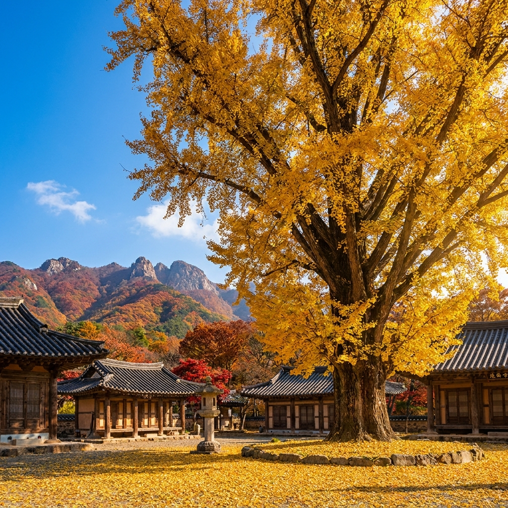
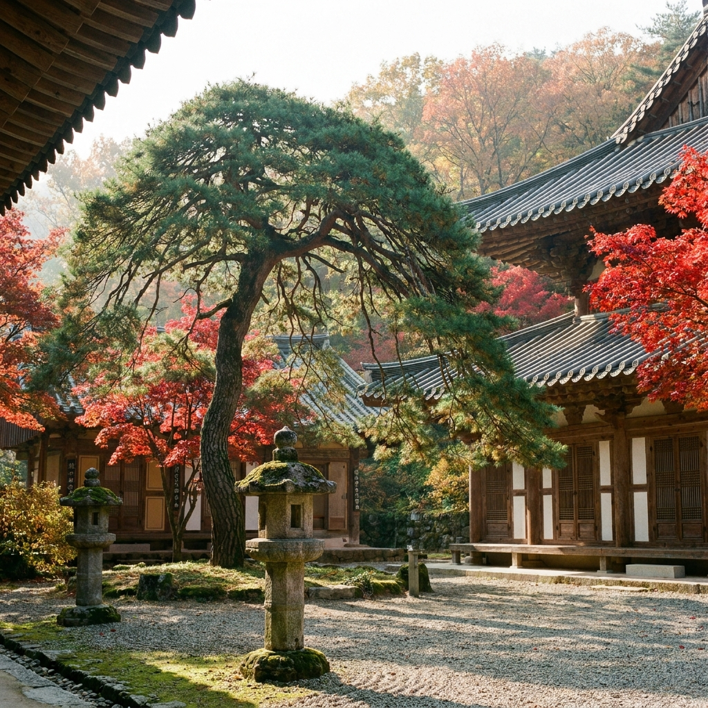

청도 운문사 가을 은행나무 개방 시기와 단풍 코스 — 사리암 주차장 요금과 주말 관람 팁
경북 청도 호거산 자락에 자리한 운문사의 상징인 400년 수령 거대 은행나무는 매년 10월 하순부터 11월 초순까지 웅장한 황금빛 장관을 드러냅니다.
비구니 승가대학 수행 공간에 위치하여 평소에는 일반인 출입이 통제되지만, 은행나무 단풍 절정기 약 1주일 동안만 특별히 일반에 개방됩니다.
문화재관람료 감면 정책으로 사찰 입장료는 전면 무료이며 주차장 이용 시 소형차 기준 2,000원의 주차요금만 발생합니다.
운문사 솔바람길을 걸어 본전과 처진소나무를 둘러본 뒤 계곡을 따라 기도 영험 도량인 사리암까지 오르는 코스는 영남 최고의 가을 힐링 걷기 명소로 손꼽힙니다.

호거산 암봉을 배경으로 황금빛 잎을 활짝 피운 400년 수령 운문사 은행나무와 고즈넉한 사찰 경내 / AI 제작 이미지
01 | 청도 운문사 천년고찰과 호거산 가을 단풍 풍경 개요
경상북도 청도군 운문면 신원리에 자리 잡은 운문사는 신라 진흥왕 21년(560년)에 창건된 유서 깊은 천년고찰입니다.
삼국유사를 집필한 일연선사가 주지로 머물며 집필을 구상했던 유서 깊은 사찰이자, 현재 대한민국 최대 규모의 비구니 전문 승가대학이 위치한 청정 수행 도량입니다.
사찰을 병풍처럼 둘러싸고 있는 호거산(虎踞山)과 운문산 자락은 10월 중순부터 서서히 붉은 물이 들기 시작하여 10월 말이면 온 산이 만산홍엽(滿山紅葉)의 절경을 이룹니다.
평지에 넓게 자리 잡은 가람 배치 덕분에 가파른 언덕을 오르지 않고도 고즈넉한 한옥 전각과 오색 단풍의 조화를 편안하게 감상할 수 있어 가족 단위 나들이객에게 최고의 가을 여행지로 손꼽힙니다.
청정 계곡물 소리와 사찰의 은은한 목탁 소리가 어우러지는 가을 운문사는 일상의 번뇌를 내려놓고 마음을 정화하기에 더없이 좋은 힐링 공간입니다.
02 | 400년 수령 비구니 승가대학 은행나무 특별 개방 시기와 관람 시간
운문사 가을 여행의 백미는 단연 수령 400년이 넘는 두 그루의 거대한 은행나무입니다.
이 은행나무는 승려들의 엄격한 교육과 수행이 이루어지는 승가대학 학인 스님들의 거처(만세루 뒤편 요사채 구역)에 자리 잡고 있어 평소에는 일반 관람객의 출입이 엄격히 제한됩니다.
하지만 사찰 측에서는 은행나무가 황금빛으로 물드는 10월 말부터 11월 초 사이(약 7일~10일간)에 한해 관람 구역을 특별 개방하여 일반인도 가까이서 감상할 수 있도록 배려합니다.
특별 개방 시간은 매일 오전 08시부터 오후 17시까지로 제한되며, 스님들의 수행과 정진에 방해가 되지 않도록 정숙한 관람 예절이 요구됩니다.
거대한 은행나무 아래로 소복하게 쌓인 황금빛 융단과 웅장한 나뭇가지가 뿜어내는 가을의 생명력은 보는 이로 하여금 깊은 경외감을 느끼게 합니다.
03 | 천연기념물 처진소나무와 만세루 가을 고즈넉한 사찰 풍경
운문사 경내로 들어서면 은행나무 외에도 시선을 사로잡는 보물이 있습니다. 바로 천연기념물 제180호로 지정된 운문사 처진소나무입니다.
수령 약 500년으로 추정되는 이 소나무는 나무 모양이 마치 거대한 우산을 펼쳐놓은 것처럼 옆으로 넓게 드리워져 있는 매우 독특한 자태를 자랑합니다.
매년 봄 스님들이 막걸리를 물에 타서 뿌리에 공양하는 전통으로도 유명하며, 가을철 붉은 단풍나무들 사이에서 변함없이 짙푸른 기품을 드러내어 감탄을 자아냅니다.
사찰의 중심 전각인 대웅보전 앞마당과 조선 시대 승병들의 훈련 장소이자 강당으로 쓰였던 만세루(萬歲樓) 주변은 단풍 사진을 담기에 가장 아름다운 구역입니다.
단청이 바랜 옛 목조 건축물의 소박한 멋과 붉고 노란 나뭇잎이 어우러져 한 폭의 진경산수화를 눈앞에서 마주하는 듯한 감동을 선사합니다.

천연기념물 운문사 처진소나무의 웅장한 우산형 수형과 붉게 물든 주변 단풍의 조화 / AI 제작 이미지
04 | 운문사 솔바람길 산책로 vs 사리암 계곡 트레킹 코스 비교표
운문사를 방문하셨을 때 선택할 수 있는 대표적인 걷기 코스는 평지 숲길인 '솔바람길'과 다소 경사가 있는 산길인 '사리암 계곡길' 두 가지입니다.
체력과 일정에 맞춰 적절한 코스를 선택하실 수 있도록 주요 특징을 비교해 드립니다.
| 구분 |
운문사 솔바람길 (평지 산책로) |
사리암 계곡 트레킹 (산행 코스) |
| 코스 구간 |
매표소 입구 ~ 운문사 경내 (약 1.5km) |
사리암 주차장 ~ 사리암 본전 (약 1.0km) |
| 소요 시간 |
편도 약 20~25분 |
편도 약 35~45분 (계단 및 오르막) |
| 길 상태 및 난이도 |
완만한 흙길 및 데크길 (난이도 하) |
돌계단 및 가파른 오르막길 (난이도 중) |
| 주요 풍경 |
수백 년 소나무 숲길, 솔향기, 계곡물 반영 |
기암절벽 속 암자, 나반존자 기도처, 첩첩산중 조망 |
| 추천 대상 |
어르신, 유모차 동반 가족, 가벼운 산책 |
소원 기도객, 단풍 산행 애호가, 건강 트레킹 |
시간적 여유가 있으시다면 오전에 솔바람길을 걸어 운문사 본전을 둘러보신 후, 오후에 차를 타고 사리암 주차장으로 이동하여 사리암을 오르는 연계 코스를 추천합니다.
05 | 기도 도량 사리암 올라가는 길 경사도와 등산 소요시간 팁
운문사 경내에서 차량으로 계곡을 따라 약 2km 더 들어가면 영남 3대 기도 도량으로 꼽히는 사리암(邪離庵) 입구 주차장에 닿습니다.
사리암은 '한 가지 소원은 반드시 들어준다'는 나반존자(독성존자) 기도처로 전국 불자들의 발길이 끊이지 않는 영험한 암자입니다.
주차장에서 사리암 본전까지 거리는 약 1km 정도로 짧지만, 해발 고도를 단숨에 올리는 1,008개의 가파른 돌계단이 이어집니다.
평소 운동량이 적으신 분들은 숨이 턱까지 차오를 수 있으므로 무리하지 말고 계곡 쉼터에서 중간중간 쉬어가며 오르셔야 합니다.
정상에 오르면 깎아지른 바위 절벽 틈새에 제비집처럼 세워진 암자의 비경과 함께 발아래로 펼쳐지는 울긋불긋한 운문산 단풍 절경이 힘든 산행의 피로를 단숨에 씻어줍니다.
호거산 바위 절벽과 오색 단풍 숲 사이로 이어지는 사리암 1,008 돌계단 숲길 / AI 제작 이미지
06 | 문화재 구역 입장료 무료화 현황과 주차장 요금 계산 안내
전국 주요 사찰의 문화재 관람료 감면 정책 시행에 따라, 청도 운문사의 입장료는 2023년 5월부터 전면 무료입니다.
과거 성인 기준 2,000원씩 부과되던 입장료 부담이 완전히 사라져 누구나 자유롭게 천년고찰의 가을을 만끽하실 수 있습니다.
다만 차량을 이용하여 방문하실 경우 사찰 진입로 입구 매표소에서 차량 주차 요금이 정액제로 부과됩니다.
주차 요금은 소형 및 승용차 기준 2,000원, 대형 버스 기준 3,000원으로 매우 저렴하며, 입장 시 선불로 정산됩니다.
주차권을 수령하신 후에는 운문사 정문 주차장이나 사리암 입구 주차장 중 원하는 곳에 주차하실 수 있습니다.
07 | 주말 단풍 절정기 주차 혼잡 회피 전략과 매표소 통과 시간대
10월 말 은행나무 특별 개방과 단풍 절정기가 겹치는 주말에는 경북 및 대구, 부산, 울산 등 인근 대도시에서 수많은 차량이 몰려듭니다.
운문사로 들어가는 도로는 왕복 2차선 외길이기 때문에 오전 10시를 넘기면 삼계리 계곡 방면에서 사찰 입구까지 수 킬로미터의 극심한 차량 정체가 빚어집니다.
주차 대란을 완벽하게 피하기 위한 골든타임은 오전 08시 30분 이전 도착입니다.
사찰 정문 바로 앞 제1주차장은 오전 9시경이면 이미 만차되므로, 늦게 도착하셨다면 입구 초입의 대형 공영주차장에 차를 대고 솔바람길을 걸어 올라가시는 것이 훨씬 빠릅니다.
오후에 방문하실 계획이라면 차라리 점심 인파가 빠져나가는 오후 15시 이후에 진입하시는 편이 교통 체증을 줄이는 요령입니다.
08 | 청도 감와인터널과 청도반시 가을 미식 연계 여행 체크리스트
운문사 단풍 구경을 마친 후 청도군의 대표적인 명소들을 엮어 알찬 당일치기 여행 코스를 완성해 보세요.
가을 청도는 전국 최대의 씨 없는 감 '청도반시'가 주홍빛으로 탐스럽게 익어가는 계절입니다.
🍂 청도 가을 당일치기 추천 연계 명소 체크리스트
1. 청도 와인터널: 1904년 개통된 옛 경부선 철도 터널을 개조한 곳으로, 연중 15도를 유지하는 서늘한 터널 속에서 청도 감와인 시음과 이색 포토존을 즐길 수 있습니다.
2. 청도 프로방스 포토랜드: 해가 진 뒤 방문하기 좋은 프랑스풍 빛 테마파크로, 화려한 LED 조명쇼와 야경 사진을 남기기에 제격입니다.
3. 청도 읍성 & 석빙고: 고즈넉한 성곽길을 따라 걸으며 가을 들녘을 조망할 수 있는 역사 유적지로 한적한 산책에 최적입니다.
4. 가을 제철 청도반시 & 옹골찬 감말랭이: 도로변 로컬푸드 직판장에서 달콤하고 부드러운 홍시와 쫄깃한 감말랭이를 알뜰하게 구매해 보세요.
5. 청도 추어탕거리: 청도역 앞 추어탕 골목에서 맑고 칼칼하게 끓여낸 경상도식 전통 미꾸라지 추어탕 한 그릇으로 든든한 가을 보양 식사를 즐겨보세요.
운문사에서 와인터널이나 청도 읍성까지는 차량으로 약 40~50분 정도 소요되므로 동선을 미리 계획하시기 바랍니다.
09 | 운문사 단풍 출사 사진 명당과 방문 전 필수 준비물
운문사의 아름다운 가을 풍경을 카메라나 스마트폰에 완벽하게 담기 위한 출사 팁입니다.
은행나무를 촬영할 때 가장 좋은 앵글은 만세루 기와지붕 처마 곡선과 황금빛 은행나무 가지를 한 프레임에 대각선으로 배치하는 구도입니다.
전통 한옥의 묵직한 먹색 기와와 샛노란 잎사귀가 대비를 이루며 가장 고풍스러운 가을 정취를 연출합니다.
사찰 경내 바닥은 흙과 자갈로 이루어져 있고 사리암 코스는 1,000개가 넘는 돌계단을 오르내려야 하므로 접지력이 좋은 등산화나 트레킹화를 필히 착용하셔야 합니다.
산속 사찰은 도심보다 기온이 4~5도 이상 낮고 바람이 차가우므로 따뜻한 겉옷과 보온병에 담은 따뜻한 물을 준비하시면 더욱 안락하고 건강한 가을 여행이 될 것입니다.
#청도운문사
#운문사은행나무
#운문사단풍
#사리암기도도량
#청도가볼만한곳
#청도여행코스
#운문사주차요금
#호거산단풍
#청도와인터널
#가을사찰여행